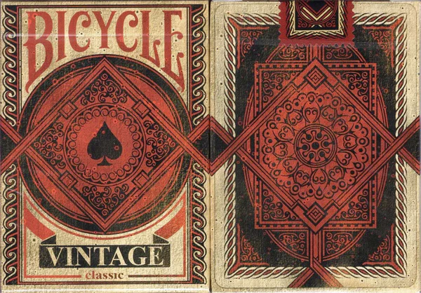
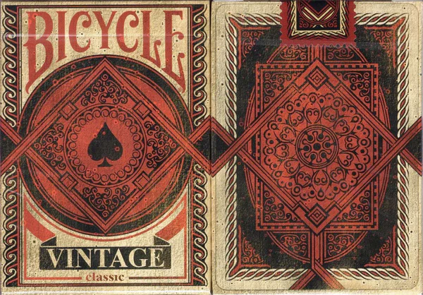

Bicycle Vintage
La baraja Bicycle Vintage es una baraja de naipes de estilo clásico, diseñada para evocar una sensación de nostalgia y elegancia. Presenta un diseño retro con colores desvanecidos y un acabado suave que hace que parezca que ha sido utilizada durante décadas. Esta baraja es perfecta para aquellos que buscan una baraja de cartas con estilo y encanto vintage.